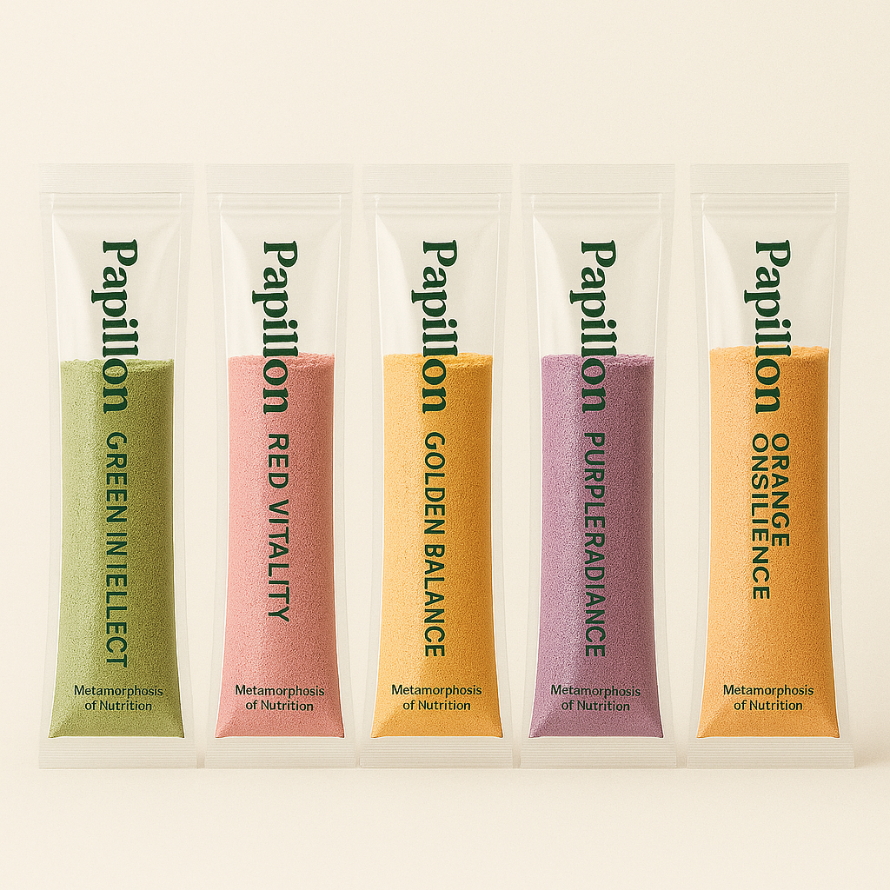

Od prehrambenih preporuka do razumijevanja biologije
Hranu smo dugo promatrali prvenstveno kroz energetsku vrijednost, proteine, masti i ugljikohidrate.
No suvremena znanost o prehrani otvara znatno širu perspektivu.
Hrana nije samo izvor energije. Ona je složena biološka matrica čiji sastojci međudjeluju s našim metabolizmom, crijevnim mikroorganizmima i fiziološkim procesima.
Način na koji uzgajamo, pripremamo, kombiniramo i konzumiramo namirnice može utjecati na njihovu nutritivnu vrijednost i dostupnost pojedinih sastojaka.
Upravo se ovdje otvara prostor za kulinarsku medicinu, interdisciplinarni pristup koji povezuje znanost o prehrani, medicinu, biokemiju i kulinarske vještine.
Njezin cilj nije svaku namirnicu predstavljati kao lijek.
Cilj je pretvoriti znanstvene spoznaje u održive prehrambene navike koje podupiru zdravlje, kvalitetu života i prevenciju bolesti.
Izdvajamo pet prehrambenih područja koji nam pomažu razumjeti tu povezanost.
1. Prehrambena vlakna: temelj zdravlja crijeva

Prehrambena vlakna mnogo su više od sastojaka koji olakšavaju probavu.
Njihova važnost proizlazi iz različitih fizioloških i metaboličkih funkcija.
Određene vrste vlakana prolaze kroz tanko crijevo bez potpune razgradnje i dospijevaju u debelo crijevo, gdje postaju supstrat za fermentaciju crijevnih mikroorganizama.
Tijekom fermentacije mogu nastajati kratkolančane masne kiseline, uključujući acetat, propionat i butirat.
Ti metaboliti sudjeluju u održavanju funkcije crijevne sluznice i različitim metaboličkim procesima.
Vlakna također pridonose regulaciji probave, osjećaju sitosti i, ovisno o vrsti, glikemijskom odgovoru.
Kako izgleda približno 30 g vlakana dnevno?
| Namirnica | Okvirna količina vlakana |
|---|---|
| 60 g zobenih pahuljica | 6 g |
| 150 g kuhane leće | 12 g |
| 150 g malina | 10 g |
| 15 g chia sjemenki | 5 g |
| Ukupno | ≈ 33 g |
Napomena o nutritivnim vrijednostima: Prikazane količine prehrambenih vlakana ilustrativne su procjene temeljene na javno dostupnim podacima o sastavu hrane, uključujući dansku bazu FRIDA (DTU National Food Institute). Stvarne vrijednosti mogu odstupati ovisno o sorti, podrijetlu, pripremi, udjelu vode i analitičkoj metodi. Ukupnih približno 33 g vlakana primjer je kombinacije namirnica, a ne laboratorijski potvrđena vrijednost konkretnog obroka. Referentna baza: FRIDA – Danish Food Composition Database .
2. Kalcij: važna je i količina i bioraspoloživost

Kalcij povezujemo sa zdravljem kostiju, ali sudjeluje i u mišićnoj kontrakciji, prijenosu živčanih signala i drugim fiziološkim funkcijama.
Kod prehrane temeljene na biljnim namirnicama posebno je važno razlikovati ukupni sadržaj kalcija od njegove bioraspoloživosti.
Primjerice, špinat i blitva sadrže kalcij, ali i oksalate koji ograničavaju njegovu apsorpciju.
Povrće poput brokule i raznih vrsta kelja mogu imati povoljniju bioraspoloživost kalcija.
Praktični izvori u biljnoj prehrani uključuju tofu pripremljen s kalcijevim solima, obogaćene sojine napitke, određene kupusnjače i sjemenke.
Biljni izvori kalcija
| Namirnica | Okvirna količina kalcija |
|---|---|
| Obogaćeni sojin napitak, 250 ml | ≈ 299 mg |
| Tofu s kalcijevim sulfatom, približno 125 g | ≈ 253 mg |
| Kuhani kelj, približno 130 g | ≈ 94 mg |
| Chia sjemenke, približno 12 g | ≈ 76 mg |
| Lisnati kelj (kale), sirovi, 21 g | ≈ 53 mg |
Orijentacijske vrijednosti navedene prema NIH Office of Dietary Supplements; stvarni sadržaj ovisi o proizvodu i veličini porcije.
HIPI KulMed: Preciznim odabirom sastojaka i razumijevanjem njihove bioraspoloživosti moguće je oblikovati nutritivno kvalitetnije obroke bez nepotrebnog kompliciranja svakodnevne prehrane.
3. Bobičasto voće: polifenoli i veza s mikrobiomom

Lokalno dostupno bobičasto voće, poput borovnica, kupina, malina, aronije i crnog ribiza, sadrži različite polifenole, uključujući antocijane odgovorne za njihove intenzivne boje.
Polifenoli su zanimljivi jer se njihova biološka aktivnost ne završava nužno nakon probave i apsorpcije u tankom crijevu.
Dio tih spojeva dospijeva u debelo crijevo, gdje ih mikroorganizmi mogu metabolizirati u manje molekule.
Istodobno, prehrambeni polifenoli mogu utjecati na sastav i metaboličku aktivnost mikrobnih zajednica.
Takva dvosmjerna interakcija važan je predmet suvremenih istraživanja prehrambene biokemije.
Ipak, učinke opažene u laboratorijskim istraživanjima ne treba automatski poistovjećivati s klinički potvrđenim učincima kod ljudi.
HIPI KulMed: Bobičasto voće omogućuje povezivanje prirodne slatkoće, kiselosti, vlakana i fitokemikalija u raznolike prehrambene matrice.
Upravo je naglasak na raznolikosti jedan od ključnih elemenata kvalitetnog prehrambenog obrasca.
4. Rezistentni škrob: kada kulinarska tehnika mijenja biologiju hrane

Jedno od posebno zanimljivih područja kulinarske medicine jest rezistentni škrob.
Za razliku od škroba koji se razgrađuje u tankom crijevu, rezistentni škrob u određenoj mjeri odolijeva probavnim enzimima i dospijeva u debelo crijevo.
Ondje može postati supstrat za mikrobnu fermentaciju.
Što je RS3?
Rezistentni škrob tipa 3 (RS3) nastaje procesom retrogradacije škroba.
Tijekom kuhanja u prisutnosti vode škrob prolazi želatinizaciju. Nakon hlađenja dio škrobnih molekula ponovno se organizira u strukture koje su manje dostupne probavnim enzimima.
Taj se proces može odvijati u kuhanom i ohlađenom krumpiru, riži i drugim škrobnim namirnicama.
Količina nastalog RS3 ovisi o vrsti škroba, vremenu i temperaturi hlađenja te naknadnoj obradi.
Od kulinarske tehnike do mikrobnog metabolizma
Kuhanje i hlađenje škrobne hrane
↓
Retrogradacija dijela škroba i nastanak RS3
↓
Dospijevanje u debelo crijevo
↓
Mikrobna fermentacija
↓
Nastanak kratkolančanih masnih kiselina
Među njima posebno je zanimljiv butirat, koji predstavlja važan izvor energije za stanice sluznice debelog crijeva.
Butirat sudjeluje i u regulaciji određenih staničnih i imunoloških procesa.
To ne znači da će svaka ohlađena škrobna namirnica proizvesti jednak fiziološki učinak. Stvarna količina rezistentnog škroba i odgovor mikrobioma ovise o brojnim čimbenicima.
HIPI Culinary Medicine: Ovaj primjer pokazuje da kulinarska tehnika nije samo pitanje okusa i teksture. Ona može promijeniti strukturu hrane i njezino ponašanje tijekom probave.
5. Kava: više od kofeina

Kava je složena prehrambena matrica koja sadrži brojne biološki aktivne spojeve, uključujući klorogenske kiseline i druge polifenole.
Njihova prisutnost i koncentracija ovise o vrsti kave, prženju, mljevenju i načinu pripreme.
Istraživanja proučavaju povezanost konzumacije kave s različitim metaboličkim i fiziološkim procesima.
Međutim, učinci nisu jednaki kod svih ljudi.
Na individualnu toleranciju utječu količina kofeina, osjetljivost organizma, vrijeme konzumacije i kvaliteta sna.
Kava nije nužan sastojak zdrave prehrane, ali kod osoba koje je dobro podnose može biti dio uravnoteženog prehrambenog obrasca.
HIPI Culinary Medicine: Važno je promatrati cjelokupni kontekst konzumacije, a ne izdvajati pojedinačne spojeve i pripisivati im univerzalne učinke.
Od pojedinačnih namirnica do prehrambenog obrasca
Vlakna, kalcij, polifenoli, rezistentni škrob i spojevi prisutni u kavi nisu pet odvojenih rješenja.
Oni predstavljaju pet perspektiva kroz koje možemo bolje razumjeti složenost prehrane.
Njihovo djelovanje ovisi o ukupnom sastavu prehrane, individualnoj biologiji, mikrobiomu, životnom stilu i načinu pripreme hrane.
Zato je korisnije govoriti o kvaliteti i raznolikosti prehrambenog obrasca nego o pojedinačnim supernamirnicama.
Kulinarska medicina upravo tu dobiva svoju praktičnu vrijednost.
Ona povezuje znanstvene preporuke s realnim svakodnevnim izborima: što kupujemo, kako kuhamo, kako kombiniramo sastojke i koliko nam je određeni način prehrane dugoročno održiv.
HIPI Culinary Medicine: od kliničke preporuke do svakodnevne prakse

Klinička prehrana ima važnu ulogu u zdravstvenoj skrbi, osobito kada su potrebne individualizirane nutritivne intervencije.
No između stručne prehrambene preporuke i njezine svakodnevne provedbe često postoji velik prostor.
Pacijent ili korisnik može razumjeti što bi trebao jesti, ali ne mora imati znanje, vrijeme, vještine ili motivaciju da tu preporuku pretvori u konkretan obrok.
Kulinarska medicina može pomoći premostiti taj prostor.
Povezivanjem medicinskog i nutricionističkog znanja s praktičnim kulinarskim vještinama, moguće je razvijati pristupe koji su razumljiviji, primjenjiviji i dugoročno održiviji.
Ne radi se o zamjeni kliničke prehrane, nego o njezinu mogućem proširenju kroz edukaciju, praktičnu pripremu hrane i aktivno sudjelovanje pojedinca.
U tom interdisciplinarnom prostoru HIPI Health vidi svoju misiju.
Papillon: nutritivna znanost u praktičnom obliku

Primjena kulinarske medicine ne završava u kuhinji.
Ona otvara i prostor za razvoj novih prehrambenih proizvoda koji nastoje očuvati vrijedne sastojke cjelovitih namirnica, a istodobno pojednostaviti njihovu svakodnevnu primjenu.
Papillon, razvojni koncept HIPI Healtha, istražuje mogućnosti biljnih liofiliziranih prehrambenih matrica.
Poseban interes usmjeren je na prehrambena vlakna, polifenole, biljne proteine, rehidraciju i senzorsku kvalitetu.
Takav pristup zahtijeva pažljivo formuliranje, laboratorijsku analizu i provjeru stabilnosti gotovog proizvoda.
Cilj nije razviti proizvod s obećanjima o liječenju ili prevenciji određene bolesti.
Cilj je istražiti kako znanstveno utemeljena prehrana može postati dostupnija, praktičnija i jednostavnija za svakodnevnu primjenu.
Papillon je trenutačno u fazi istraživanja i razvoja. HIPI Health radi na formulacijama biljnih liofiliziranih monodoza, njihovoj rehidraciji, senzorskim svojstvima i mogućnostima praktične svakodnevne primjene.
Paralelno razvijamo identitet proizvoda, ambalažu i pristup budućoj tržišnoj validaciji. Cilj je povezati prehrambenu znanost, kulinarsku kreativnost i tehnologiju u jednostavno prehrambeno iskustvo.
Hrana kao svakodnevna praksa zdravlja
Zdravlje ne nastaje jednim obrokom, jednom namirnicom ili jednim proizvodom.
Oblikuje se kroz navike, okoliš, biologiju i niz odluka koje svakodnevno ponavljamo.
Kulinarska medicina nudi mogućnost da hranu ponovno razumijemo u njezinoj punoj složenosti, kao poveznicu između prirode, znanosti, kulture i ljudskog zdravlja.
Hrana nije samo ono što unosimo u tijelo. Važno je i ono što naša biologija s njom može učiniti.
HIPI Health | Food is Medicine – Health is Wealth
Napomena: Članak je edukativnog karaktera. Ne zamjenjuje individualne medicinske ili nutricionističke preporuke.